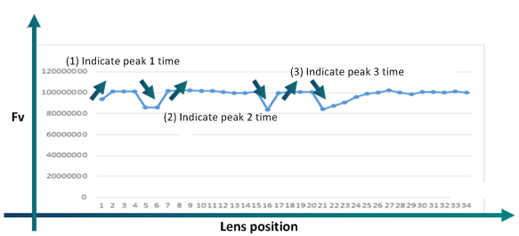
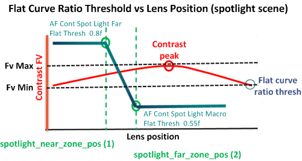

Adjust the AF spotlight threshold parameters to help prevent the FV from ending in a false peak position and recognize the spotlight scene as a flat curve. These adjustments can result in:
Stricter peak recognition when AF search ends
AF processing uses the flat curve ratio threshold to judge if the FV curve is a flat curve.
For a spotlight scene, the best focusing position is usually at the infinite position or staying at the hyperfocus position.
With AF spotlight processing enabled, a spotlight scene is detected with a peak position larger than spotlight_far_zone_pos (50 cm). Only a sharper curve should be trusted; otherwise it is better to consider it as flat curve and let it stay in hyperfocus position (e.g., moon scene, night scene). The flat curve ratio of peak position between spotlight_far_zone_pos and spotlight_near_zone_pos is linearly interpolated.
| Parameter | Definition | Default | Range | Effect |
|---|---|---|---|---|
| enable | Enable flag for spotlight AF process. | 0 | 0,1 | |
far_flat_th (AF Cont Spotlight Far Flat Thresh) |
Flat threshold for far scene when detecting a spotlight condition. | 0.55 | 0-1 | The lower the easier to be recognized as flat scene |
macro_flat_th (AF Cont Spotlight Macro Flat Thresh) |
flat_threshold for macro scene when detecting spotlight condition | 0.85 | 0-1 | The lower the easier to be recognized as flat scene |
inc_flat_th (AF Cont Spotlight Inc Flat Thresh) |
Threshold to judge if current AF position is in increase or flat condition. General Scene = 1.005 Spotlight Scene = 1.035 |
1.035 | 1-3 | The larger the value, the harder to be recognized as FV increment. Increasing inc_flat_th and decreasing dec_flat_th helps to prevent ending in a false peak position and to recognize it as a flat curve. |
dec_flat_th (AF Cont Spotlight Decr Flat Thresh) |
Threshold to judge if current AF position is in decrease or flat condition. General Scene = 0.995 Spotlight Scene = 0.978 |
0.978 | 0-1 . |
The lower the value the harder to be recognized as FV decrement. Increasing inc_flat_th and decreasing dec_flat_th helps to prevent ending in a false peak position and to recognize it as a flat curve. |